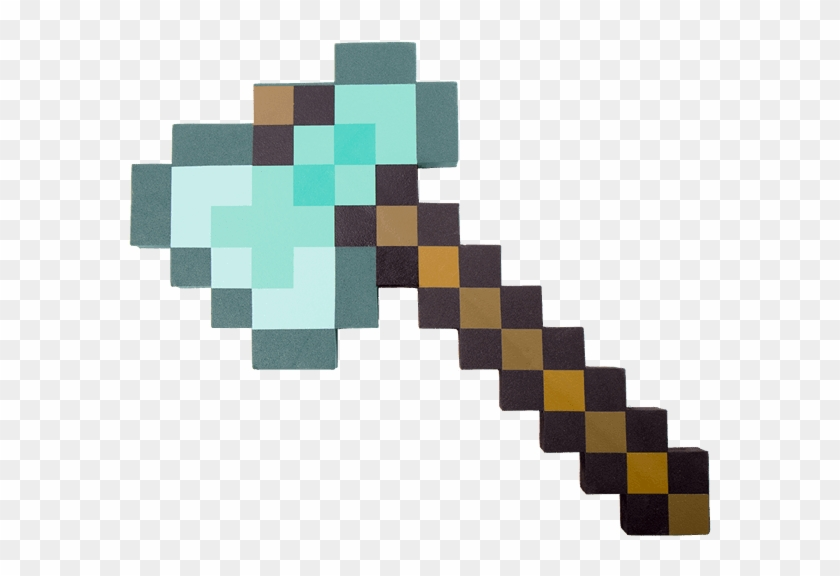
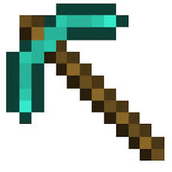
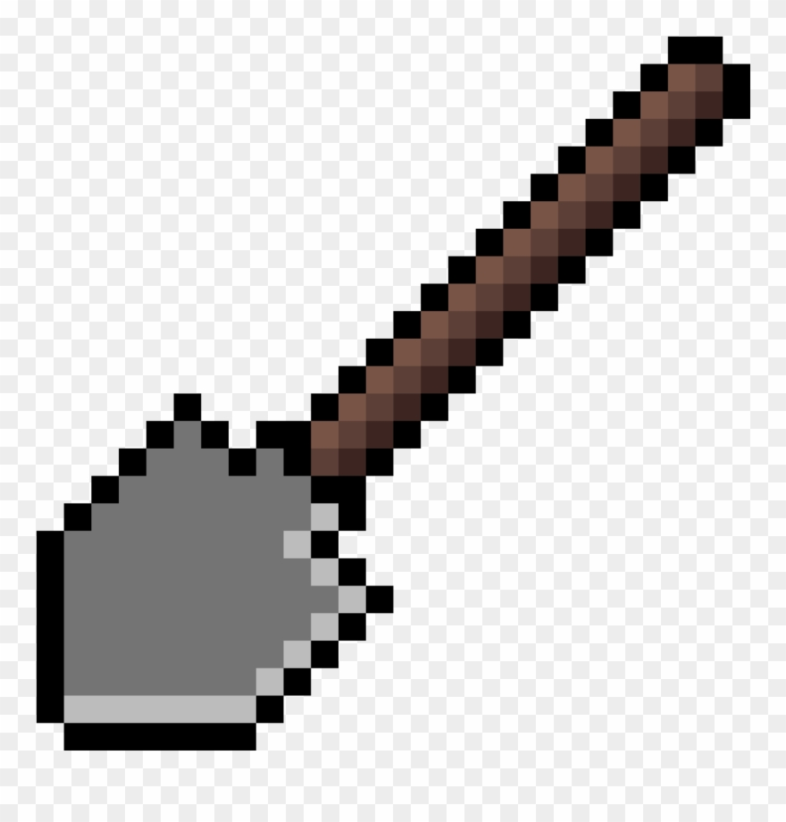
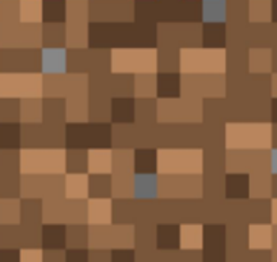
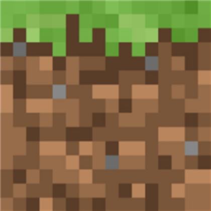
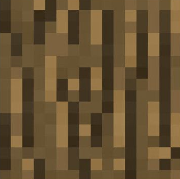
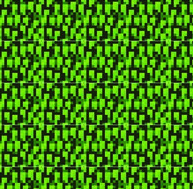

You are now in the world of minecraft where you get to build the world using 3 Tools and 4 different resources.
The tools available to you:
| 1) Axe  |
2) Pick Axe  |
3) Shovel  |
Your Available resources :
| 1) Dirt  |
2) Grass  |
3) Tree Bark  |
4) Leaves  |
Begin by selecting a tool in your sidebar menu on the right portion of the screen.When you click the tool you will see it highlighted with a blue frame.
You will now also see your mouse cursor change to that tool. This is now your active tool. You can use it for a specific resource mining. The table below
displays which resources you can carve for each tool.
| Tool | Resource |
| Axe | Tree bark, leaves |
| Pick Axe | Stone |
| Shovel | dirt , grass |
Use your active tool to carve the resource on the screen. The screen is built from "tile" boxes, of varoius resources.If you attempt to use a tool on the wrong
resource you will see the active tool box frame flash in color red. Make sure to choose the proper resource according to the table above. After you carve the resource.
you will see the resource icon displayed in the box below your tools in the side menu. This is your inventory box. By selecting your inventory box, you make you
resource "active" and now can use it to build on the screen. You can place the resource on the screen where you have a proper foundation below. If you choose dirt,grass or stone
you can put them over dirt, grass or stone. You can't put them over leaves or tree or in the middle of the sky. If you choose carve tree bark or leaves you can place them anywhere as
long as you have foundation. If you attempt to place inventory in a tile which it can't be placed on then you will see it flash red frame.
Enjoy building your world!